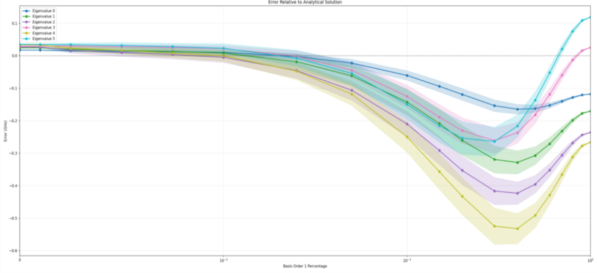

Circuit Simulator & Hierarchical Basis Function
Documented 12/26/2025CQEM (The Computational Quantum ElectroMagnetics lab) is lead by Prof. Roth at the Purdue University. I am very glad that I have this chance to work with them as undergraduate researcher.
The first work I have done include modifying the Circuit Simulator front-end GUI to work together with the back-end simulator designed by Jack.
Another work is p-refinement for FEM basis function, which include using higher order basis function to improve the accuracy of the simulation.
Hierarchical Basis Functions in Finite Element Method
The understanding of the FEM is based on chapter 3 in the lecture note of ECE 61800: Numerical Electromagnetics by Prof. Roth and understanding of the hierarchical basis function is based chapter 3.7 in The Finite Element Method in Electromagnetics (Wiley) by Prof. Jin.
The both of higher-order vector and scalar basis functions are called Hierarchical Basis Functions, which is widely used in finite element analysis of the electromagnetic field. It has three requiremets when implementing:
- They should be linearly independent and complete to the desired order. Therefore, the number of hierarchical basis functions for a given order is the same as the number of interpolatory basis functions.
- They should make it easy to enforce the interelement continuity for the expanded quantity in the finite element formulation. The interelement continuity refers to the continuity at the nodes, across the edges, and across the faces of the elements.
- The basis functions of a given order should explicitly include those of lower orders. In other words, the hierarchical basis functions of order p should retain all the basis functions of order p-1 and then add a few new ones necessary to make them complete to order p.
By implementing it, we will gain two advantages:
- It permits the use of basis functions of different orders in a single finite element mesh, which can facilitate the implementation of adaptive p-refinement
- It provides a foundation in the development of multigrid and multilevel solvers or preconditioners for an efficient solution of finite element equations
For my implementation, we mainly take advantage of the first one. The implementation for: scalar and gradient of scalar; and vector and curl of vector are varified by using finite difference method.
The simulation result for eivenvalues on EM for a cavity hole in the infinite plane is displayed below
The simulation include 200 runs for each percentage of order 1 inclusion. The x-axis means the proportion of order 1 included. 0 means purely order 2, and 1 means purely order1. The y-axis means the error of eigenvalue in GHz, where the dashed line means 0 error. The third order is not simulated because the indexing is not finished this semester.
By observing purely second order and purely first order, we can tell that fully second order out-performed the first order. However, we see the mix of first and second order has unexpected result, where there's a decrease in accuracy at the beginning where we just start adding in second order. I think this is because 200 runs is too little, and, in some cases, we have the first order on complex geometries and second order on simple geometries, but this is only a guess. I don't know why there's a decrease in accuracy. This can be figured out by researchers next semester.
Gaussian Quadrature Rule
The implementation of Gaussian Quadrature Rule is based on This paper.
This feature is implemented to simplify the calculation of K matrix (3.45) in note, where the basis function is evaluated with each of simplex coordinate as descriped in Chapter 3.6 and equation (3.33) in the note.
We are able to calculate integration form of K matrix in summation form at specific integration points for accurate result, according to the paper.
Circuit Simulator
This simulator supports these features:
- Output Netlist for desired components assembled
- Able to save schematics for future use
- A top-bar contains all supported functionalities
- A separate page for displaying simulation results
The code is well-structured and well-commented for future developers adding features.
The following demo shows basic functionalities.